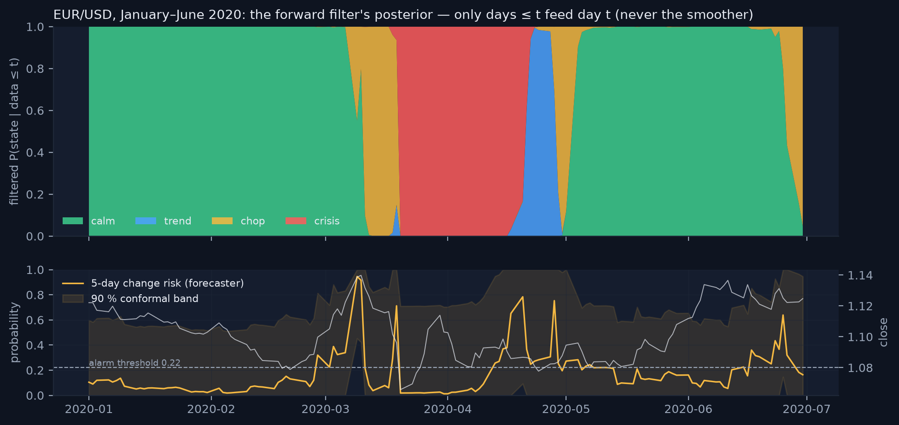
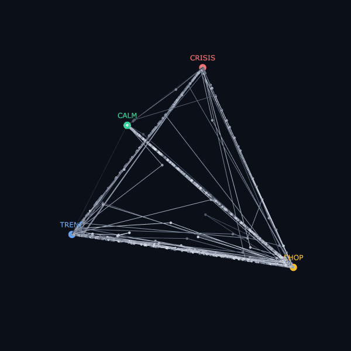
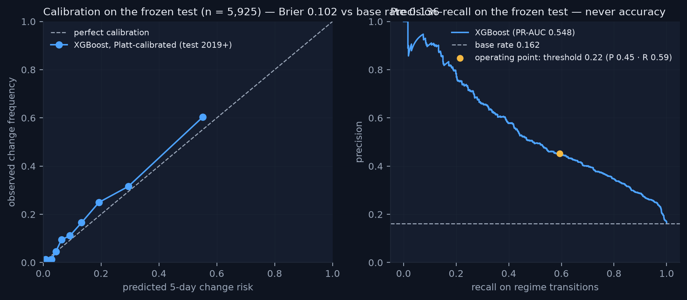
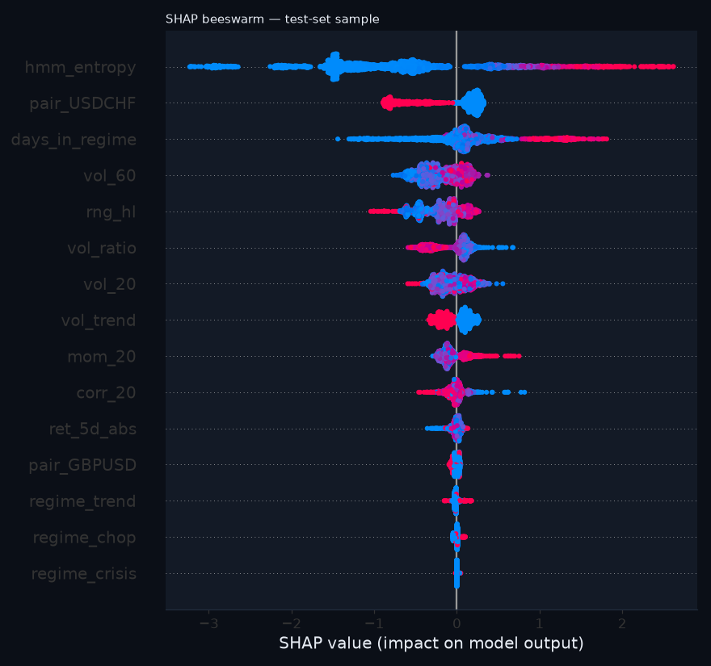
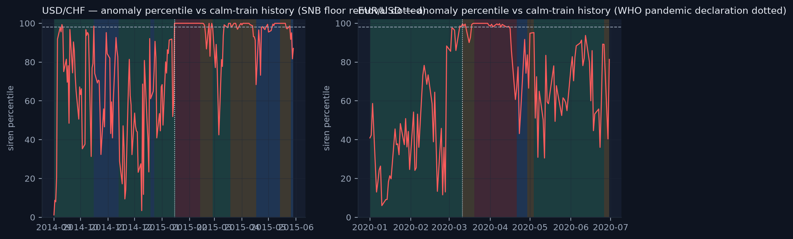
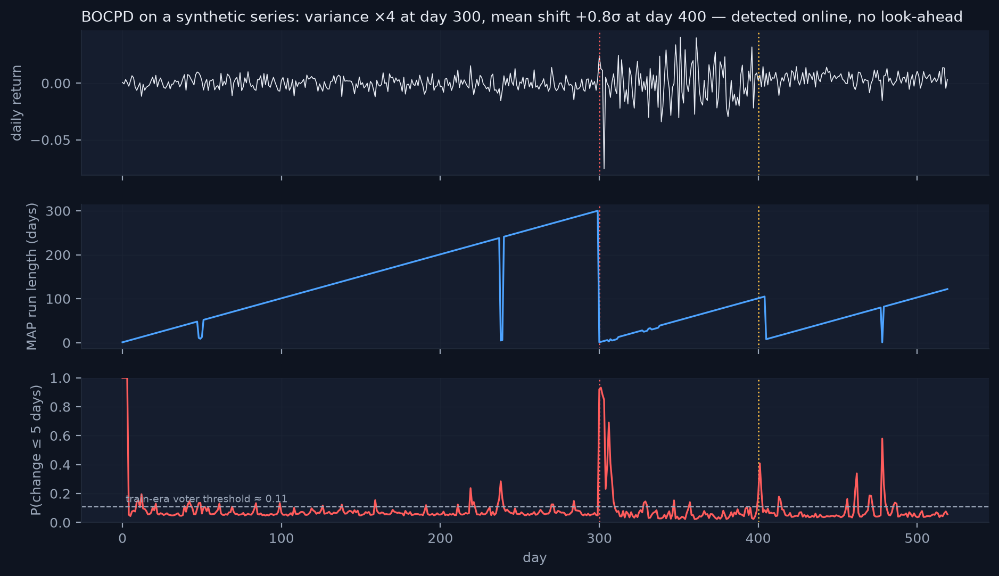
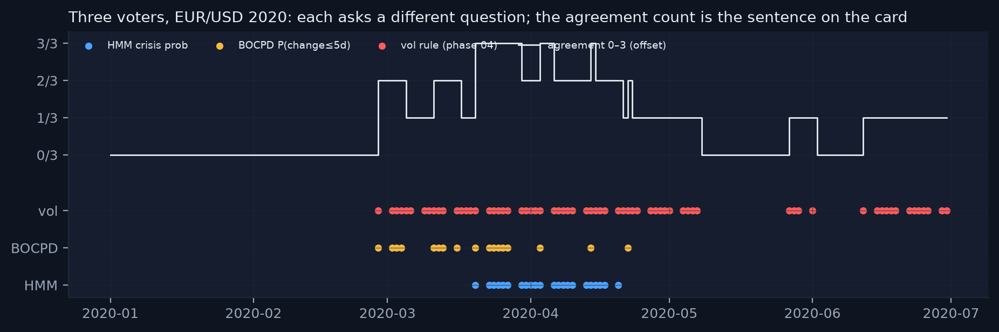
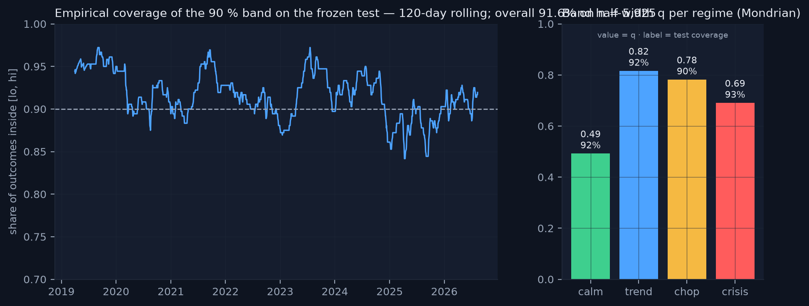

A hidden Markov model for the nowcast, a gradient-boosted classifier for change risk, an autoencoder for anomalies, a Bayesian changepoint detector for a second opinion, conformal bands for honest uncertainty, and a language model kept on a very short leash. None of them predicts direction. All of them are causal.
The HMM is the oldest idea in the system and the one most often done wrong. It assumes the market is always in one of a few unobserved "moods", that each mood produces returns, volatility and momentum with its own typical pattern, and that moods are sticky. The model is allowed to learn those patterns from the training years; it is not allowed to look at tomorrow when it names today.
Per pair, a four-state Gaussian HMM with full covariance (hmmlearn.GaussianHMM, 1,000 EM iterations, seed 42) is fitted on three standardised features — ret_1d, vol_20, mom_20 — from training rows only (≤ 2016-12-31; the scaler is fitted there too). Four states is a choice, not a discovery: it is the smallest number that separates "quiet" from "stressed" and still distinguishes a persistent move from a directionless one. The states come out anonymous; a frozen naming rule orders them by mean training vol_20 (lowest = calm, highest = crisis) and, of the middle two, calls the one with the larger |mean mom_20| "trend" and the other "chop". The rule is applied once, at fit time, and saved with the model, so a refit cannot quietly rename states.
hmmlearn's predict_proba returns smoothed posteriors: the probability of each state at day t given the entire sample, future included. In a backtest that produces beautifully crisp regimes that flip exactly when, in hindsight, they should have. In production it is impossible — tomorrow's data does not exist. The project therefore implements the forward algorithm itself and uses only αt, the filtered posterior:
Only rows ≤ t feed row t, which is what makes the truncation test of chapter 3 pass for the regime columns as well. The regime label is the argmax of αt; its probability, the four filtered probabilities, the entropy of αt and the run length of the current label are written to the artifact. A replay of the frozen bundle's filter reproduces the committed labels exactly — the 3-D "probability space" view is built from that replay, never from the smoother.

The validation phase asked four questions and published the answers even where they hurt. Anatomy. Out of sample (2017 onward) the volatility ordering calm < trend/chop < crisis survives for every pair — a label is not just an in-sample artefact. EUR/USD spends 58 % of out-of-sample days in calm (mean run 41 days, 5.8 % annualised vol) and 3.6 % in crisis (12.7 % vol). Mean returns inside labels are tiny relative to volatility: regimes describe conditions, not direction, which is exactly the claim. Seed stability. Refitting with five other seeds agrees with the reference model on 40–100 % of days; the calm/crisis ends are stable, the trend/chop split is fragile (EUR/USD mean agreement 71 %, below the 80 % warning line). EM finds local optima; the report says so. Baseline. Against a one-line rule — "stressed when vol_20 is above its trailing 250-day 80th percentile" — the HMM does not systematically lead: across matched stress episodes it led in 4 and lagged in 14. Its value is not earlier warnings but a four-way, sticky, probabilistic description with a confidence and an entropy, which is what the forecaster and the siren need as inputs. Economic meaning. A toy moving-average trend rule is not best inside the "trend" label out of sample. That claim was tested and failed, and the failure was printed.
USD/CHF's "crisis" state was learnt almost entirely from the January 2015 SNB shock: 20 training days at ~65 % annualised volatility. It never fires out of sample. The 2008–2011 stress for that pair is carried by the "chop" and "trend" states instead. This is reported in the validation report and shapes the consensus thresholds in chapter 7 (the HMM voter for USD/CHF needs a crisis probability of only 0.2 to fire).

probs @ V for the vertex matrix V, nothing is fitted, and the axes are hidden because simplex coordinates have no units. A path that hugs the vertices says the filter is usually decisive; time spent near the centroid would say the opposite."Why filtered and not smoothed?" Because the smoother conditions on the future; the filter conditions on the past. "Why full covariance?" Because the features are correlated inside a state (vol and |momentum| move together in crisis) and a diagonal model would need extra states to fake that. "What would you change?" Test five states, add a duration-explicit (semi-Markov) variant, and fix the seed instability with a consensus of seeds — all listed in chapter 19.
The only model in the system with a prediction target, and therefore the only one that is scored. The target is not a return. It is the probability that the filtered regime label will be different on any of the next five trading days — the risk that the weather changes.
Labels look forward; features do not. Train ≤ 2016-12-31 (9,136 rows, positive rate 17.0 %), validation 2017–2018 (1,527 rows), test 2019+ (5,922 rows at the time of freezing), with five rows dropped on both sides of every boundary per pair so that no training label can "see" a validation feature. Fifteen features: the nine base features (ret_1d is excluded as directionless noise), the three post-HMM features, one-hot regime indicators and one-hot pair indicators. Every HMM-derived input is the filtered value; the truncation test asserts it.
XGBClassifier with fixed hyper-parameters — depth 3, learning rate 0.04, subsample and column-sample 0.8, min_child_weight 8, up to 1,000 trees with early stopping on validation PR-AUC (it stopped at iteration 283, val PR-AUC 0.479) — and scale_pos_weight 4.88 computed from the training class balance. No grid search. This is deliberate: tuning on validation would buy little and cost credibility, because validation is also where the threshold and the conformal quantiles come from. Because class weighting distorts predicted probabilities, the raw scores are Platt-recalibrated on validation (a = 0.95, b = −1.30); the raw numbers are still printed in the scoreboard. The decision threshold, 0.22, was chosen on validation to reach recall ≥ 60 % on transitions — early-warning economics: a false alarm costs a look, a missed storm costs the reason the tool exists, so the system buys recall and pays in precision, and says so.
| model (test 2019+, scored once) | threshold | PR-AUC ↑ | precision | recall | Brier ↓ | n |
|---|---|---|---|---|---|---|
| XGBoost, Platt-calibrated (ours) | 0.22 | 0.548 | 0.452 | 0.594 | 0.102 | 5,922 |
| XGBoost, raw probabilities | 0.52 | 0.548 | 0.455 | 0.579 | 0.128 | 5,922 |
| logistic regression, same features | 0.15 | 0.431 | 0.381 | 0.626 | 0.116 | 5,922 |
| one-feature rule (days_in_regime > train median) | 0.50 | 0.143 | 0.113 | 0.380 | 0.584 | 5,922 |
| base rate (constant train positive rate) | 0.17 | 0.162 | 0.162 | 1.000 | 0.136 | 5,922 |
Read it honestly. A PR-AUC of 0.548 against 0.431 for a linear model on the same features is a clear margin, and against a base rate of 0.162 it is a large one. At the chosen threshold the model catches 59 % of transitions with 45 % precision. Brier 0.102 calibrated vs 0.128 raw vs 0.136 base rate: the recalibrated probabilities are at least as well calibrated as the linear model's. Regime transitions of a sticky HMM are intrinsically hard to time — the label flips on the HMM's own filtered decision — so no forecaster here should be read as a market call. It is a change-risk gauge.

TreeSHAP values are computed for every scored row and the three largest |SHAP| contributions are stored as top_drivers. Across history the dominant drivers are hmm_entropy (how unsure the regime model is — the single best predictor of its own imminent change), days_in_regime (regimes age), vol_60 and vol_trend (the season and its direction), and rng_hl (intraday range). The narrator (chapter 9) translates these names into phrases such as "how unsure the regime model is" and "the size of daily trading ranges"; it never invents a driver that is not in the list.

"Why not accuracy?" 84 % of test days have no change; a constant "no" gets 84 %. "Why PR-AUC and not ROC-AUC?" Because the positive class is rare and is the class we care about; ROC is flattered by the many easy negatives. "Why Platt and not isotonic?" Two parameters fitted on 1,527 validation rows are hard to overfit; isotonic would not be. "Would you retune after seeing the test?" No — the test was scored once and the number is frozen; the live ledger (chapter 11) is where new evidence goes.
Regimes answer "which of four known weathers is it?" The siren answers a different question: "does today look like anything the model has seen in quiet times?" It is a detector, not a forecaster, and it is deliberately trained on the boring days.
A small MLP autoencoder (sklearn.MLPRegressor, hidden layers 8 → 3 → 8, early stopping, seed 42) is trained to reconstruct the standardised feature vector of days the HMM called calm with probability above 0.7 in the training era: 2,788 calm training days from April 2005 to December 2016, pooled across pairs with no pair identity. Having only ever seen calm, it reconstructs calm well and everything else badly. The anomaly score is the reconstruction error; the anomaly percentile is that error's rank against the calm-training distribution, so "98" means "worse than 98 % of calm days the model learnt from". Per-feature errors and the nearest calm neighbour (excluding the last ten days) are stored for the narrator.
Validation was a list of famous shocks and a question per shock: does the siren peak within [−1, +3] days? The SNB floor removal of 15 January 2015 is USD/CHF's loudest day in twenty-one years (reconstruction error 343, percentile 100, rank 1 of 5,560 days), with the following three weeks all above 99. March 2020 lights up for every pair (EUR/USD peak 99.9 on 16 March). The autumn of 2008 fills EUR/USD's top fifteen. The siren also fires on days no one would name, which is correct behaviour for a detector; the overlay in chapter 10 and the alert engine in chapter 16 use "above 98" as the actionable line.

An anomaly detector trained on all days learns that crises are normal, because the 2008 autumn alone contributes hundreds of them. Training on calm days defines "normal" the way a treasurer means it, and makes "unlike anything in calm history" a statement with a precise reference set. The price is that the siren is loud in any high-volatility regime — which is why the dashboard shows it beside the regime, never instead of it.
The HMM asks "which weather is it?" A changepoint detector asks a different question — "how old is the current era, and did it just end?" — and asking two different questions of the same data is worth more than asking one question twice. The detector was written from scratch, in about a hundred lines of NumPy, because writing it is the point.
Bayesian online changepoint detection keeps a posterior over the run length rt — the number of days since the last changepoint. Each day it does two things: it grows every hypothesis ("the run continues") and it spawns a new one ("a changepoint happened, r = 0") with prior probability equal to the hazard H, here 1/60 — a prior belief that eras last about a quarter. Observations are modelled as Gaussian with unknown mean and variance under a Normal–Inverse-Gamma prior, which has closed-form updates and a Student-t predictive:
Hypotheses with posterior mass below 10−6 are pruned so the state stays small. Two numbers are published per pair per day: the MAP run length and P(rt < 5) — the probability that a changepoint happened within the last five days, the same horizon as the forecaster. The prior scale β0 is set from training-era return variance per pair (a weak, scale-aware prior; κ0 = α0 = 1). Because the algorithm is online, it is causal by construction — and the truncation test is still run, bit-for-bit.

The consensus module counts three binary votes, each with a training-era threshold and each asking its own question: HMM — filtered crisis probability at or above the train-era 95th percentile (clipped to [0.20, 0.50], so a pair whose crisis state is nearly empty in training still needs a real signal); BOCPD — P(change ≤ 5 d) at or above the train-era 90th percentile (≈ 0.11, so the voter fires on about a tenth of training days); vol rule — the phase-04 baseline reused verbatim, vol_20 above its trailing 250-day 80th percentile. Agreement 0–3 is shown as three dots on every weather card and written to the ledger, with one template sentence per level: "0/3 agree: quiet conditions — no voter sees stress" … "3/3 agree: storm conditions — every voter sees stress". Templates only; no language model; no direction words.

"The vol rule screams, BOCPD is calm — most likely situation?" A slow drift of volatility across the 80th-percentile line without any break in the return distribution: a season change, not an event. "Why train-era-only thresholds?" Because a threshold chosen on the whole history is a parameter fitted on the test set, and the live record would then be scoring a number chosen with hindsight.
A probability without an error bar invites false precision. Every change risk the system publishes now wears a band — and the band comes with a receipt showing how often it actually contained the outcome.
Take a calibration set the model has not been trained on. For each row compute a nonconformity score — here |realised outcome − predicted probability|. Take the 90th-percentile score (with a finite-sample correction: the ⌈(n+1)(1−α)⌉-th smallest, α = 0.1). The interval for a new prediction is p̂ ± that quantile, clipped to [0, 1]. Under exchangeability the theorem guarantees ≥ 90 % coverage; time series are not exchangeable, so the project does not cite the theorem anywhere user-facing and instead reports empirical coverage — frozen once, then live as ledger rows mature. The kinship is with VaR coverage backtesting (Kupiec, Christoffersen): promise 90 %, count the hits.
"Mondrian" conformal computes the quantile separately per group — here per regime — so that a calm day does not borrow the uncertainty of a crisis day. Calibration is the 2017–2018 validation years only (asserted in code: the calibration dates are strictly inside that window; the 2019+ test is untouched). The report states the dual use plainly: these years also chose the forecaster's early-stopping round and threshold. Regimes with fewer than 30 calibration rows borrow the pooled quantile (crisis has 21).
| regime | calibration rows (2017–18) | half-width q | frozen-test coverage |
|---|---|---|---|
| calm | 780 | 0.49 | 92.2 % |
| trend | 175 | 0.82 | 92.0 % |
| chop | 551 | 0.78 | 90.0 % |
| crisis | 21 (pooled q) | 0.69 | 92.9 % |
| overall | 1,527 | — | 91.6 % on n = 5,922 |
The bands are wide — half-widths of 0.5 to 0.8 on a probability scale — and that is the honest truth about a binary outcome: the nonconformity |y − p̂| for y ∈ {0, 1} cannot be small when p̂ is mid-range. The band answers "is the realised 0/1 outcome inside [p̂ − q, p̂ + q]?" nine times in ten, and the receipt shows it does: 91.6 % overall, 90–93 % per regime, within three points of nominal over 5,922 test days. Crisis q is larger than calm q, as it should be; the cards say "bands are wide on purpose" when the regime is crisis.

"Why must calibration never touch the test?" Because the test is the receipt; a quantile fitted on it would certify itself. "Is the true risk definitely inside the band?" No. The band is a frequency statement about a procedure — nine times in ten on the record so far — not a guarantee about any one day, and the record, not the theorem, is what we publish.
Numbers need sentences; sentences are where language models become dangerous. The narrator is a small model on a very short leash.
Every day, per pair, the pipeline assembles a JSON object of computed numbers — regime, confidence, age, change risk and its three drivers, anomaly percentile and nearest calm neighbour — and sends it to claude-haiku-4-5 at temperature 0.3 with a system prompt that reads, in full: "You are the narrator for an educational FX dashboard. Using ONLY the JSON provided, write exactly three sentences in calm, plain English: (1) the current regime, its confidence and age; (2) the 5-day regime-change risk and its top drivers, translated into ordinary words; (3) the anomaly status, mentioning the closest historical match only if anomaly_pct > 90. Never predict prices, never give advice, never add facts not present in the JSON, never use jargon without a plain-word gloss." The reply is checked against a banned-word list (rise, fall, buy, sell, bullish, target, upside …); if the API key is absent, the call fails, the reply is empty or it contains a direction word, a deterministic template produces the same three sentences from the same JSON, and the card is labelled auto instead of AI. The entire test-suite, CI and every contributor run without a key.
"EUR/USD is in a calm regime with 100 % confidence, now on day 80 of this regime. The model puts the chance of a regime change within five trading days at 1 %, which is low, driven mainly by how unsure the regime model is, the three-month volatility backdrop and the size of daily trading ranges. Nothing looks unusual today compared with calm history (anomaly percentile 73)." — a template sentence triple from 18 August 2026. Every clause maps to a field; nothing maps to an opinion.
The same discipline extends to every other text surface: the consensus sentences (chapter 7), the treasury rationale (chapter 14), the weekly report (chapter 18), the alert payloads (chapter 16) and the storm reports (chapter 15) are all templates, all linted for direction words, and all carry the rule-7 line. The language model that reads central-bank statements (chapter 13) is a separate story with a separate wall.